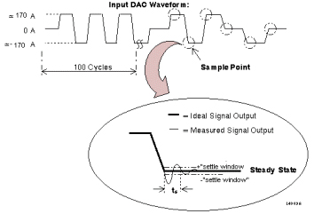

Proprietary to General Electric
Direction 5500113, Rev# 3
Discovery MR750 3.0T Service Methods
Module Version 1.0, Version Date 4/25/07
Proprietary to General Electric |
his test is really a combination of two different tests. Each is described in detail below.
These diagnostics test for three possible hardware configurations and operating modes. They exercise the Gradient Driver subsystem in the most comprehensive manner, and also in the same modes used in product. Together with the Power-up Tests, these Static Tests establish confidence in the following areas of the subsystem:
Digital portions of the GP Board
The entire MDS link
The analog signals on the Scalable Gradient Amplifier (SGA)
The analog signals on the SGA Power Supply
The analog signals on the GP
The entire power chain of the gradient subsystem
Prior to starting the Static Tests, a comparison is made between the hardware configuration specified in the MRconfig.cfg file, and the actual hardware sensed by the GP Board. If the two do not match, the Gradient Driver Tests are aborted. It is critical that the MR configuration file and the hardware present match exactly for these tests to operate. If they do not match, Gradient Driver Tests are not executed for any axis.
Prior to beginning the Static Tests, all fault registers on the GP are checked.
If any of the faults are set, an error is logged, and NO Tests are performed.
Faults are also monitored during the operation of the test. If a fault occurs, an error is logged and the test is aborted on that axis.
There are two modes in which the Static Tests run:
Standby Static Mode
Ready Static Mode
Each Static Test consists of forcing DAC values and measuring a set of signals. All tests sequence through two passes. The first uses a small range of DAC values to catch any overcurrent conditions before damaging the hardware. The second pass uses the full scale range from -320A to 320A, with steps every 16A. If any signals are out of range in the first pass, an error is logged and the test is aborted.
Throughout the Static Tests, signals are generated and data are collected. To determine the relative health of the hardware, transfer functions are calculated using the data collected to determine if those data are within range. This is the method that these tests use to predict where a problem is in the subsystem.
Each axis of the Gradient Driver subsystem is tested independently. If an error occurs on one axis, the error is logged, the axis is taken to Standby, and the test on that axis aborts; however, all other axes continue with the rest of the Static and Dynamic Tests.
Every error message that could be generated by the Static Tests has been reviewed for technical accuracy and service relevance. In all cases, if there was more information that could be added to the error message, an extended error message has been created.
The Dynamic Tests are executed sequentially after a successful run of the Static Tests. This group of tests uses EPI-type waveforms. This means that voltages and currents are generated and played out using the Gradient Driver subsystem circuitry, and the epoxy-filled Gradient Coil. This digital and analog test uses a waveform that is played out to provide a unique look at analog information for diagnostic purposes.
The test that is run during the Dynamic Tests portion of the Gradient Driver Tests is called the Settling Time Test.
This Dynamic Test verifies that a measured gradient signal settles into its steady state value within a predefined settling time. Settling time is defined as the time required for a signal to reach and remain in a "predefined" window of the ideal steady state voltage or current.
Illustration 1: SETTLING TIME TEST WAVEFORMS

Illustration 1 shows the Settling Time Test waveforms and sample times. The upper portion of the illustration shows the overall waveform used during the test. The DAC Input is cycled through several swings of current. After loading down the system with 100 cycles, the sample phase is entered. In this phase, the DAC signal is taken from 0A to approximately 170A to approximately –170A to approximately 170A to 0A to approximately –170A to 0A, to explore each of the major transition points of the waveform. A dashed circle indicates each transition point in the illustration.
At a transition point, the resultant output signal exhibits an overshoot and damped oscillation to its steady-state value (as shown in the exploded view in the illustration). The Settling Time Test verifies that the output signal enters the "pre-defined" window within the defined settling time (ts).
Prior to beginning the Settling Time Tests, all fault registers on the GP are checked.
If any of the faults are set, an error is logged and no Dynamic Tests are performed.
The GP generates the Input DAC Waveform for this test. At transition points, the GP begins collecting output signal samples every 4 µsec. Depending on the settling time, samples are collected until it is guaranteed that the output signal must be in the "predefined" window. If the output signal is not within the window, the test fails and an error is logged.
Throughout the Dynamic Tests, signals are generated and data are collected. This is how these tests predict where a problem is in the subsystem. The entire process is automated and is performed within the Dynamic Tests software.
Every error message that could be generated by the Static Tests has been reviewed for technical accuracy and service relevance. In all cases, if there was more information that could be added to the error message, an extended error message is created.